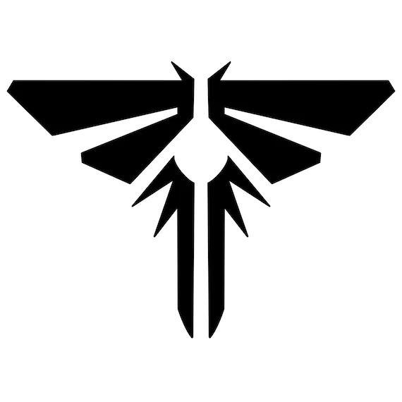

como esse rumor surgiu?
“Nos últimos meses, rumores sobre The Last of Us Part III começaram a circular na internet após supostos vazamentos, entrevistas ambíguas de desenvolvedores e especulações de fãs — mas até agora, nada foi oficialmente confirmado pela Naughty Dog.”

Neil Druckman
A possibilidade de um terceiro jogo ganhou força depois que declarações antigas de Neil Druckmann voltaram a ser discutidas, sugerindo que uma nova história poderia existir no futuro.

Mesmo sem anúncios oficiais, a comunidade continua analisando pistas, comentários e movimentos do estúdio em busca de sinais de que a franquia pode retornar
Trailer do possível The Last of Us 3
“Anos após os eventos que mudaram tudo, o mundo continua em ruínas, marcado pela dor, pela perda e pelas escolhas impossíveis. Mas mesmo entre os escombros, onde a esperança parece ter desaparecido, uma nova jornada pode estar prestes a surgir… e com ela, as consequências que ninguém está preparado para enfrentar.”
personagens:
- 1 - dina
- 2 - ellie
- 3 - joel
- 4 - tommy
- 5 - maria
- 6 - sarah
- 7 - jesse
- 8 - abby
- 9 - owen
- 10 - manny
- 11 - mel
- 12 - iara
- 13 - lev
- 14 - alice
Esses personagens são os mais prováveis de retornarem, mas é importante lembrar que a Naughty Dog pode surpreender os fãs com novos personagens ou histórias inesperadas.
espero que tenham gostado, minhas redes sociais:
- /Instagram - me segue no Instagram
- /Facebook - acesse meu perfil
- /LinkedIn - me acompanhe no Linkedin